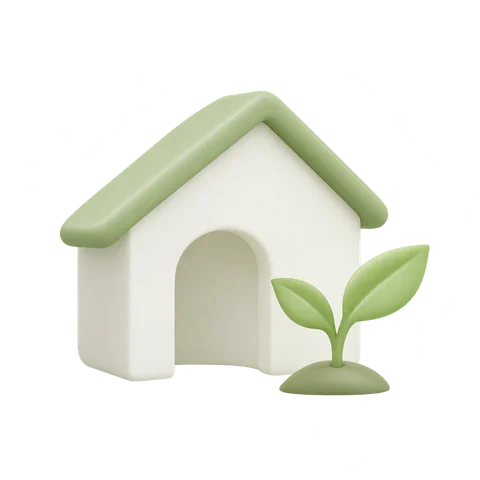
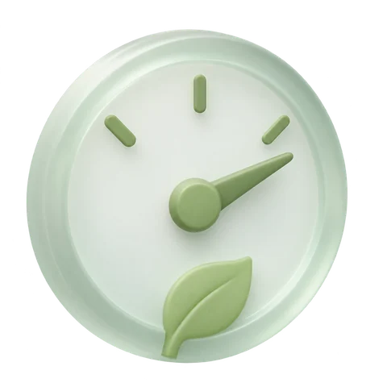
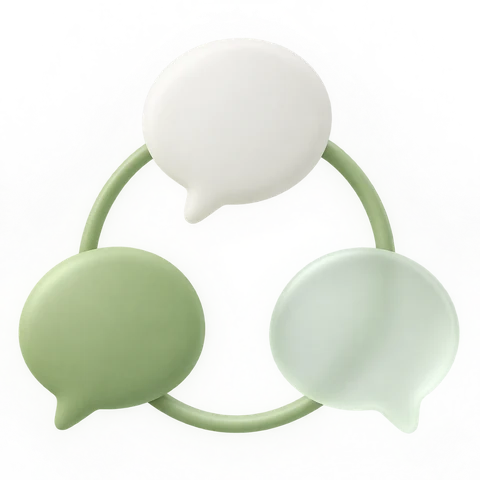
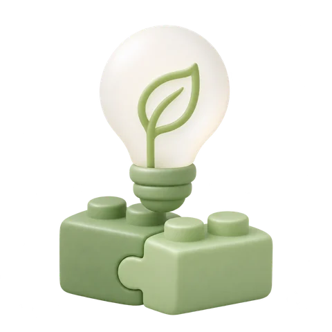
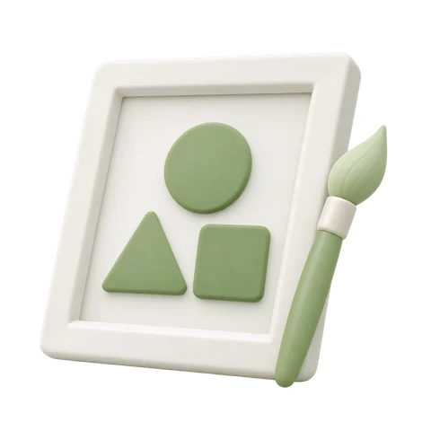
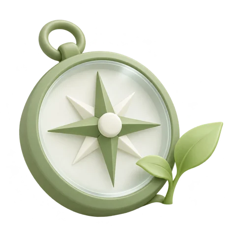

Policy Pitch Competition
An opportunity for young people to develop and present policy solutions.
Competitions![]()
Youth for Sustainable Policy
Loading Youth for Sustainable PolicyYSP brings together 700+ young people across 83 countries through six programme areas: Initiatives, Grassroots, the GreenHouse Internship Programme, Competitions, the Global Ambassador Network, and Global Chapters. Every member begins the same way — by making a commitment to the work, and to each other.
SIB × YSP International Youth Essay Competition 2026
Explore six questions connecting social justice, sustainability and international affairs.
100+ entries from 40 countries on fossil fuel subsidy reform. Meet the 20 finalists across the Open and Junior categories.
Every YSP programme sits in one of six areas — including the ones still taking shape.
Research, education, policy dialogue, publications, and youth-led projects
↗
02Community activities, local engagement, youth-led campaigns, and workshops
↗ 03
03A 12-week remote internship with mentorship and a final capstone. Next cohort starts 14 December 2026.
↗ 04Policy Brief, Policy Pitch, essay competitions, and future challenges
↗ 05
05Ambassador opportunities, regional contributions, and leadership pathways
↗ 06
06Local chapters, campus networks, regional groups, and Learning Hubs
↗
The Youth Policy Pulse: a recurring, cross-country research programme on how young people experience policy and participation. Pilot edition 2027.
Initiatives In DevelopmentA proposed youth diplomacy and policy-learning experience bringing together research, negotiation, and international affairs.
InitiativesAn opportunity for young people to develop and present policy solutions.
CompetitionsNine new programmes in three connected families. Start with something accessible, build practical skills, then move towards research, publication or community leadership.
You can join at any stage. Completing an earlier programme is not a prerequisite.
Accessible ways in: learn the basics, talk policy with peers and turn community problems into practical proposals.
A free, beginner-friendly course introducing public policy through short lessons, practical activities and knowledge checks.

Moderated, evidence-informed conversations where young people discuss public issues, hear different perspectives and explore possible policy responses.

Small teams identify a community problem, research its policy context, design a practical intervention and prepare a pilot proposal.
Research analysis, live argumentation and public communication, alongside YSP’s existing writing and pitching competitions.

Analyse open public datasets and turn the evidence into clear policy insights and recommendations.
Ties are decided on accuracy, then policy analysis. Judging is independent, with conflicts of interest checked.
Teams debate policy motions on governance, sustainability and development, weighing trade-offs and defending evidence-based positions.
The final is judged by at least three judges. Scores stay private until verified, and the winner is announced only after verification and a conflict-of-interest review.

Create an original, research-backed infographic or carousel that explains a public policy issue clearly and accessibly.
Entries are reviewed separately by design and fact-checking reviewers.
Supervised, longer-form pathways for young people ready to own a research question, a publication or a chapter.

Fellows investigate a policy challenge through supervised research and develop a policy memo or proposal around a question they own.

Prepares prospective chapter leaders in governance, safeguarding, approvals, planning and reporting.

Guides emerging writers through pitching, sourcing, drafting, fact-checking and editorial revision.
All nine programmes are in development and none is open for registration yet. Formats, cohort sizes, eligibility and dates are proposed and may change before launch. Submissions will follow our draft Research, Authorship & AI policy.
From learning about policy to researching solutions, developing civic innovations, and leading change in local communities, YSP is building pathways for young people to participate in sustainable policymaking.
A youth policy research and development programme producing policy briefs, comparative studies, and recommendations.
A practical innovation programme where youth teams design, prototype, and test solutions to local sustainability and civic challenges.
A selective, mentored leadership fellowship combining policy research, public engagement, and a capstone project.
A career exploration and professional development platform connecting young people with policy, sustainability, research, and public-sector career pathways.
A free, modular learning platform introducing public policy, sustainability, governance, and practical research skills.
Small, locally organised learning communities that bring YSP's educational materials and policy discussions into schools, campuses, cities, and online communities.
All six programmes are in development. Pilot sizes and formats are proposed and may change before launch.
Every track is built around an Impact Project — a final piece of work that's grounded, publishable, and yours. Below is a quick view; the homepage has full descriptions and intake dates.
Original policy research, literature reviews, and evidence-based analysis using primary and secondary sources.
Draft white papers, briefs, and submissions that move from idea to credible recommendation.
Feasibility models, stakeholder maps, and cost–benefit analysis for youth-led ventures with policy implications.
Cross-border simulations, position papers, and ASEAN-facing Track-II dialogue under senior practitioner supervision.
Climate adaptation, green finance, and sustainable urban policy projects grounded in regional realities.
Lived-experience research and grassroots policy storytelling — turning local knowledge into formal proposals.
By taking this pledge, you are acknowledging your role in shaping the world young people will inherit — and your responsibility to engage with the systems, policies, and decisions that determine its future.
You are also supporting Youth for Sustainable Policy, a youth-led initiative bridging research, storytelling, and policy dialogue across Singapore and Southeast Asia. By signing, you stand alongside us — and become part of something bigger.
I willuse my voice to advocate for equitable, evidence-based policy — even when it is uncomfortable.
I willtake initiative in learning about the systems that shape our world: social, environmental, and economic.
I willnot remain silent when policy decisions affect those with the least power to resist them.
I willtranslate complex ideas into language that others can access, understand, and act on.
I willstand in solidarity with communities whose futures are shaped by decisions made without them.
I willuse my knowledge and privilege to amplify youth voices that are overlooked in policy conversations.
I willapproach every issue with curiosity, rigour, and a commitment to getting it right — not just getting it done.
I willcollaborate across disciplines, borders, and backgrounds, because no single perspective is enough.
I willhold myself and my community to the highest standards of honesty, accuracy, and care.
I willremember that sustainable change begins with informed young people willing to act.
If you have any questions, please reach out to youthforsustainablepolicy@gmail.com.
We may use your email to contact you about future YSP opportunities, cohort openings, and events.
YSP is a student-driven programme. We guide you through every step — from interest to integration.
Fill out the Expression of Interest form for your preferred track. Tell us about yourself, your background, and what you hope to learn. No experience necessary.
Step OneAccepted members are matched to a cohort of 20–30 peers across Singapore and Southeast Asia. Cohorts begin on a rolling schedule.
Step TwoWork through your track's 16-week curriculum asynchronously, with structured touchpoints, discussions, and skill workshops throughout.
Step ThreeDeliver your final project to the YSP community and receive your certificate. Top capstones are featured in our network and alumni database.
Step FourYSP partners with schools, universities, and youth organisations to integrate our tracks directly into their existing programming. Educators run the curriculum locally; we provide the materials, mentorship, and quality framework.
We send you everything needed to run a YSP cohort within your school year — from the first lecture deck to the final capstone rubric.
Whether you're a student ready to apply or an educator wanting to integrate YSP into your institution, here's how to get started.
Have questions about the programme, curriculum, or how to get involved? Reach out to our team — we read everything and respond as quickly as a small, careful team can.